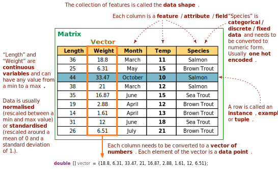

double
arrays used in the implementation of the neural network.
The input to a neural consists of vectors and matrices of numbers called a dataset. A dataset consists of a set of columns called features, each of which describes some non-redundant attribute of an entity. All non-numeric data, such as text, images and audio, must be converted to a numeric form before being processed by a neural network. Methods for converting text to numeric form include vector hashing, one-hot encoding, n-grams, Bag of Words (BOW), TF-IDF and Word2Vec. Images can be decomposed or flatmapped into a vector of bytes from their pixel data and colour model, e.g. an RGBA pixel is a 32 bit value with 1 byte each for read, green, blue and the level of transparency.
 *
The input data is usually normalised between a minimum and maximum value or transformed into a Z-score using standardisation before being input to a neural network. The type of scaling used will depend on the dataset and on the activation functions that are chosen. Failure to normalise raw data containing a wide spectrum of data ranges will result in the features containing large values dominating the flow of information through the network.
- Since:
- Aicme4j 1.0
- Author:
- Dr. John Healy, ATU.
-
Method Summary
Modifier and TypeMethodDescriptionstatic intgetMaxIndex(double[] vector) Returns the index of the output layer with the highest valuestatic voidheRandomise(Optional<double[][]> opt) Initialises the weights of nodes that use RELU and RELU-like activation functions using the "He" method described by Kaiming He.static NeuralNetworkReturns an instance of a neural network and its weights loaded from a specified file.static doublemax(double[] vector) Returns the maximum value in a vector of doubles.static doublemean(double[] vector) Returns the sample mean of the elements of a vector.static doublemean(double[][] matrix, int featureIndex) Returns the sample mean of the feature values of a dataset.static doublemin(double[] vector) Returns the minimum value in a vector of doubles.static voidnormalise(double[][] matrix, double lower, double upper) Normalises an array of input vectors with values rescaled to the range [lower..upper]static double[]normalise(double[] vector, double lower, double upper) Returns a normalised input vector with values rescaled to the range [lower..upper]static voidnormalisedXavierRandomise(Optional<double[][]> opt) Initialises the weights of nodes that use SIGMOID, TANH or similar activation functions using a variation of the Xavier method that computes the initial weight of a node from the number of both the incoming and outgoing edges.static voidRandomises the element of a two dimensional double array between minimum and maximum values.static voidsave(NeuralNetwork net, String file) Saves an instance of NeuralNetwork to the specified file.static double[]softmax(double[] vector) Returns the result of applying the softmax or normalized exponential function to a vector corresponding to the output layer of a neural network.static double[]softmaxCopy(double[] vector) Returns a copy of the vector with softmax valuesstatic double[]standardise(double[] vector) Returns a vector with each element rescaled around a mean of 0 and a standard deviation of 1.static voidstandardise(double[][] matrix) Rescales the elements of a dataset with each element rescaled around a mean of 0 and a standard deviation of 1.static doublestdev(double[] vector) Returns the standard deviation of the elements in a vector.static doublestdev(double[][] matrix, int featureIndex) Returns the standard deviation of the feature values of a dataset.static doublevariance(double[] vector) Returns the mean squared difference between each element of the vector centre of the distribution of values measured by the mean.static doublevariance(double[][] matrix, int featureIndex) Returns the mean squared difference between the feature values of a dataset with the centre of the distribution of values measured by the mean.static voidxavierRandomise(Optional<double[][]> opt) Initialises the weights of nodes that use weights of nodes that use SIGMOID, TANH or similar activation functions using the "Xavier" method described by Xavier and Bengio.
-
Method Details
-
mean
public static double mean(double[] vector) Returns the sample mean of the elements of a vector.- Parameters:
vector- the input vector used to compute the mean- Returns:
- the mean value of the input vector
-
mean
public static double mean(double[][] matrix, int featureIndex) Returns the sample mean of the feature values of a dataset.- Parameters:
matrix- the dataset of elements to processfeatureIndex- the column index of the feature- Returns:
- the mean value of the elements in column featureIndex
-
variance
public static double variance(double[] vector) Returns the mean squared difference between each element of the vector centre of the distribution of values measured by the mean.- Parameters:
vector- the input vector used to compute the variance- Returns:
- the variance of the vector elements
-
variance
public static double variance(double[][] matrix, int featureIndex) Returns the mean squared difference between the feature values of a dataset with the centre of the distribution of values measured by the mean.- Parameters:
matrix- the dataset of elements to processfeatureIndex- the column index of the feature- Returns:
- the variance of the elements in column featureIndex
-
stdev
public static double stdev(double[] vector) Returns the standard deviation of the elements in a vector.- Parameters:
vector- the input vector used to compute the standard deviation- Returns:
- the standard deviation of the elements in a vector.
-
stdev
public static double stdev(double[][] matrix, int featureIndex) Returns the standard deviation of the feature values of a dataset.- Parameters:
matrix- the dataset of elements to processfeatureIndex- the column index of the feature- Returns:
- the standard deviation of the elements in column featureIndex
-
standardise
public static double[] standardise(double[] vector) Returns a vector with each element rescaled around a mean of 0 and a standard deviation of 1.- Parameters:
vector- the input vector to standardise- Returns:
- a vector with each element rescaled to its Z-score
-
standardise
public static void standardise(double[][] matrix) Rescales the elements of a dataset with each element rescaled around a mean of 0 and a standard deviation of 1.- Parameters:
matrix- the dataset of elements to process
-
normalise
public static void normalise(double[][] matrix, double lower, double upper) Normalises an array of input vectors with values rescaled to the range [lower..upper]- Parameters:
matrix- the training data or 2D array of input vectors to normaliselower- the inclusive lower boundupper- the inclusive upper bound
-
normalise
public static double[] normalise(double[] vector, double lower, double upper) Returns a normalised input vector with values rescaled to the range [lower..upper]- Parameters:
vector- the input vector to normaliselower- the inclusive lower boundupper- the inclusive upper bound- Returns:
- the input vector normalised to the range [lower..upper]
-
max
public static double max(double[] vector) Returns the maximum value in a vector of doubles.- Parameters:
vector- the input vector of elements- Returns:
- the maximum value in a vector
-
min
public static double min(double[] vector) Returns the minimum value in a vector of doubles.- Parameters:
vector- the input vector of elements- Returns:
- the minimum value in a vector
-
getMaxIndex
public static int getMaxIndex(double[] vector) Returns the index of the output layer with the highest value- Parameters:
vector- the output layer of a neural network- Returns:
- the index from the input vector with the highest value or 0 if the index is negative or NaN. A negative index or NaN can result from a vanishing or exploding gradient during backpropagation training
-
softmax
public static double[] softmax(double[] vector) Returns the result of applying the softmax or normalized exponential function to a vector corresponding to the output layer of a neural network. Softmax converts a vector of n numbers into a probability distribution of n possible outcomes, with vector elements summing to 1.- Parameters:
vector- the output layer of a neural network- Returns:
- returns a vector of values transformed into a probability distribution
-
softmaxCopy
public static double[] softmaxCopy(double[] vector) Returns a copy of the vector with softmax values- Parameters:
vector- the output vector of a neural network- Returns:
- a copy of the vector with softmax values
-
randomise
Randomises the element of a two dimensional double array between minimum and maximum values. Randomisation of the training eights of a neuron is the first step of backpropagation training.- Parameters:
opt- the input matrix of double values to randomisemin- the minimum random value, usually between -1 and -0.5max- the maximum random value, usually between +0.5 and +1
-
xavierRandomise
Initialises the weights of nodes that use weights of nodes that use SIGMOID, TANH or similar activation functions using the "Xavier" method described by Xavier and Bengio. Each node weight is computed from a random number in the range -(1/sqrt(n)) and 1/sqrt(n), where n is the number of edges incident on the node, i.e. the number of inputs. Refer to the following paper for details on the Xavier method: Glorot, Xavier, and Yoshua,Bengio, "Understanding the difficulty of training deep feedforward neural networks.", Proceedings of the thirteenth international conference on artificial intelligence and statistics. JMLR Workshop and Conference Proceedings, 2010.- Parameters:
opt- the input matrix of double values to randomise
-
normalisedXavierRandomise
Initialises the weights of nodes that use SIGMOID, TANH or similar activation functions using a variation of the Xavier method that computes the initial weight of a node from the number of both the incoming and outgoing edges. The weight is computed from a random number in the range [-(sqrt(6)/sqrt(n + m))...sqrt(6)/sqrt(n + m)] where n is the number of nodes in the preceding layer and m is the number of nodes in the next layer.- Parameters:
opt- the input matrix of double values to randomise
-
heRandomise
Initialises the weights of nodes that use RELU and RELU-like activation functions using the "He" method described by Kaiming He. Each node weight is computed from a random Gaussian probability distribution with a mean of 0.0 and a standard deviation of sqrt(2/n) as follows: weight = gaussian(0.0, sqrt(2/n)) where n is the number of edges incident on the node, i.e. the number of inputs. Refer to the following paper for details on the He method: He, Kaiming, et al., "Delving deep into rectifiers: Surpassing human-level performance on imagenet classification.", Proceedings of the IEEE international conference on computer vision, 2015.- Parameters:
opt- the input matrix of double values to randomise
-
save
Saves an instance of NeuralNetwork to the specified file. If the network has been trained, the state of the weights also will be persisted.- Parameters:
net- the instance of NeuralNetwork to savefile- the file name- Throws:
Exception- if the file is not a valid output resource
-
load
Returns an instance of a neural network and its weights loaded from a specified file.- Parameters:
file- The path to the file- Returns:
- a loaded instance of NeuralNetwork
- Throws:
Exception- if the file is not a valid marshalled instance of NeuralNetwork.
-